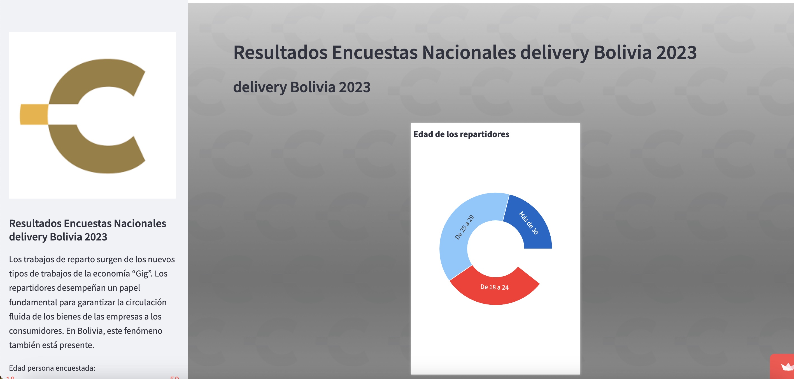
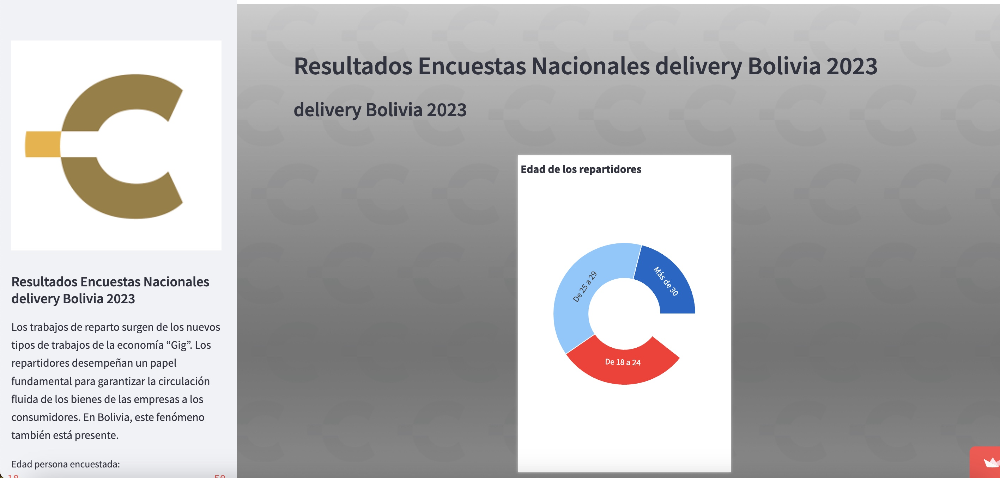
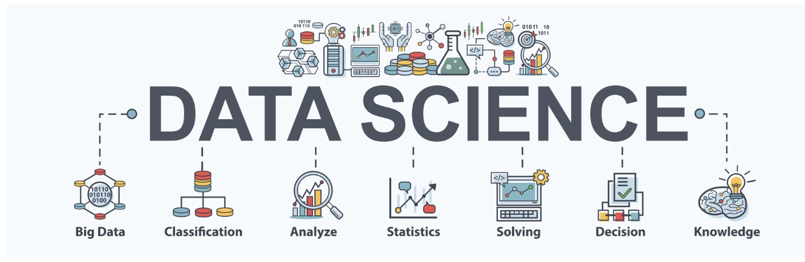
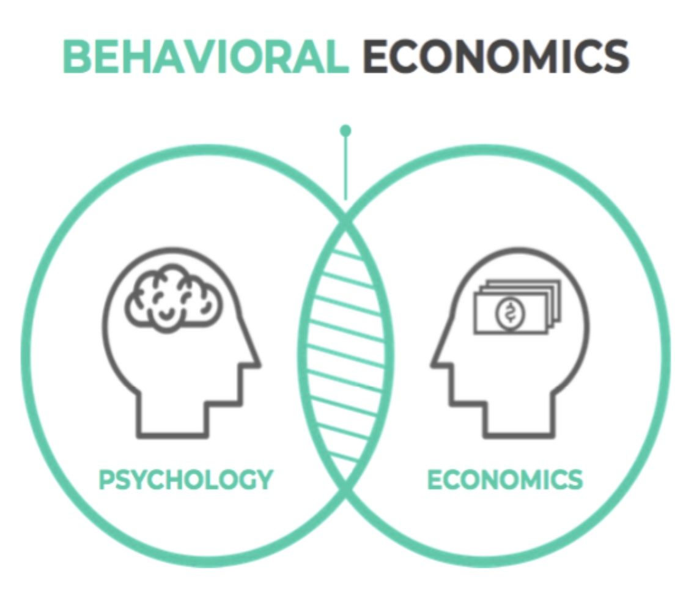
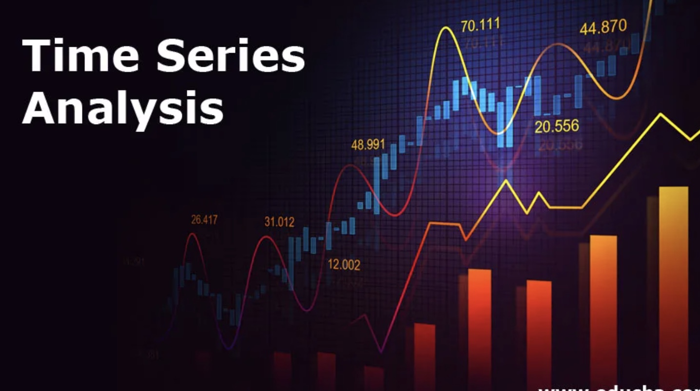

I am Reynaldo Ortiz, I work as a data scientist for an NGO called CEDLA, which is dedicated to research on the labor market in Bolivia.
I have a master's degree in Econometrics, Statistics and Big Data from the Aix-Marseille School of Economics, a master's degree in Behavioral Economics from the Université de Bourgogne Franche Comte, and a bachelor's degree in Economics from the Université Privada Boliviana.
I am particularly interested in Statistics, Machine Learning, Deep Learning, and Time Series Forecasting.
I am able to code in Python, R, and SQL.
 

In CEDLA, I conduct a research on the youth labor market. Particularly the case of deliveries, where thanks to a survey conducted by the organization, it was possible to perform an exploratory analysis and generate different results. We proceeded to the data collection, data cleaning, and subsequently to the construction of Dashboar, which can be seen in this link: https://cedla-delivery.streamlit.app/. In addition, perform forecasts on agribusiness in Bolivia. With the help of models such as Arima, LSTM, and XGBoost, the production of the main food products was projected for three years.
I worked as a data scientist for a marketing company, Media Control Bolivia. Where I investigated the investment of different companies in the Bolivian economy, in advertising in print media, television, and social networks. A forecast was made in order to know how much money the companies would invest in the next three months. A sentiment analysis was also carried out.
I worked as a data scientist for a furniture manufacturing company in Dallas, USA, LLC Millwork. A market analysis of furniture sales in that country was performed. I searched for data on the price of raw materials in the production of furniture in order to optimize the stock. Finally, a forecast on the price of raw materials and the sale of furniture was carried out.
At a travel agency, Next Travel, I worked as a data analyst. Where I proceeded to the creation of a database on customers, in order to find patterns in the sale of airline tickets.

In the course of my academic training as well as in my professional experience I realized different and extensive models. Some of them can be seen in the following link: https://github.com/Rortizri. For clear reasons I can not show all the projects that I realized in my professional activity, because they are intellectual property of the companies.
In most of my projects, I have been involved in database assembly, data cleaning, exploratory data analysis, and statistical modeling. I was fortunate to work in different sectors of the economy, which gives me a versatility when facing different statistical models.

At Cedla, besides performing Data Analysis, I also conducted research on the economic behavior of deliveries. In order to understand what people's reasons were for working as deliveries, a questionnaire was conducted, as well as interviews with a few workers. We could notice the existence of a nudge effect of the companies offering labor sources, as well as a confirmation bias effect on the part of the workers.
During my master's degree at Aix-Marseille School of economics, I had the opportunity to learn Machine-Learning and its many algorithms. In order to graduate, I had to do a project where I had to perform Machine-Learning on a database.
In the different jobs I did, I put into practice what I learned at the university. Performing exercises of Linear Regression, Decision Trees, Random Forest, classification algorithms such as Suppert Vecto Machine K-Nearst-Neigbhors, among others. Some of my projects can be seen on my Github page

I have a lot of experience in Time Series and Forecasting. In the last three jobs I had, the main objective was to be able to make forecasts. First of all sales projections, and the cost of raw materials. Then to make projections on how much would be the marketing investment of different companies in the country. Finally I made projections of how much would be the agricultural production in my country (Bolivia). In order to carry out this work, I can perform a theoretical and empirical analysis, using different statistical models, such as, ARIMA, VAR, LSTM, and XGBoost. Some projects can be seen in my Github page.
In order to perform my projects, analysis, and modeling, I can use Python and R programs. For the visualization and presentation of data, I perform them in Python, since I have little experience in Tableau, and PowerBi, but every day I improve my skills in these two programs. Python is a very powerful tool, and as libraries like Pgwalker, you can perform the same analysis and visualization as in Tableau.